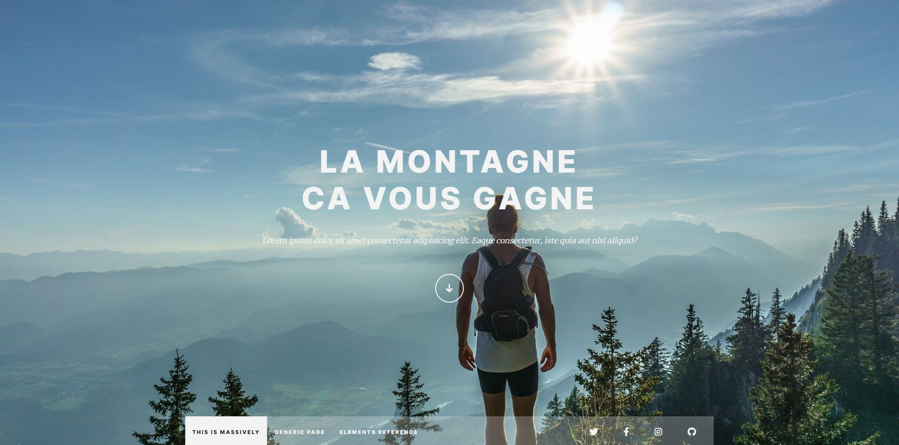
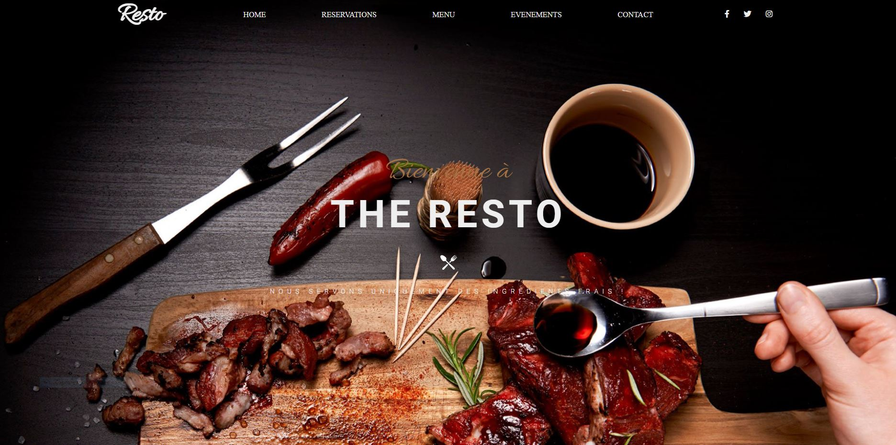

Création de sites web

Projet réalisé, de type blog, avec une base HTML plutôt simple et
une mise en page à l'aide du pré-processeur SASS.
Ce projet m'a permis de consolider mes connaissances de mise en page
avec CSS.

Projet complet de réalisation d'un site pour un restaurant à partir
d'une maquette existante.
Ce projet réalisé en HTML et CSS intègre du Javascript dans
l'affichage des menus ainsi que dans le formulaire de
réservation.
Ce projet m'a permis de mettre en pratique une bonne partie des
connaissances acquises en HTML/CSS.